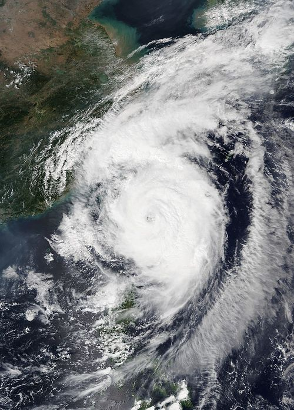
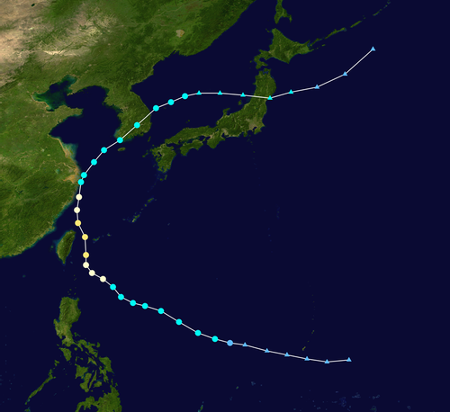

| 분류:2019년 태풍ㅣ태풍/대한민국ㅣ나무위키 태풍 프로젝트 |
주의. 사건·사고 관련 내용을 설명합니다.이 문서는 실제로 일어난 사건·사고의 자세한 내용과 설명을 포함하고 있습니다. |
| 2019년 태풍 | ||||
| [펼치기·접기] | ||||
| 파북 | 우딥 | 스팟 | 문 | 다나스 |
| 나리 | 위파 | 프란시스코 | 레끼마 | 크로사 |
| 바이루 | 버들 | 링링 | 가지키 | 파사이 |
| 페이파 | 타파 | 미탁 | 하기비스 | 너구리 |
| 부알로이 | 마트모 | 할롱 | 나크리 | 펑선 |
| 갈매기 | 풍윙 | 간무리 | 판폰 | |
| ← 2018년 태풍 | 밑줄이 그어진 이름은 제명된 태풍입니다. 한반도에 영향을 준 태풍은 이름 뒤에 * 표기. | 2020년 태풍 → | ||
목차1. 개요 2. 타임라인 2.1. 9월 26일 3. 기록 4. 피해 5. 제주 동부 지역에 토네이도가 발생했었다? 6. 대만의 난팡아오대교 붕괴 사고에 영향을 줬다? |
| 2019년 태풍 |
| 제17호 타파 → 제18호 미탁 → 제19호 하기비스 |
2019년 제18호 태풍 미탁 |
||
| 위성사진 |  | |
| 진로도 |  | |
| 활동 기간 | 2019년 9월 28일 9시 ~ 2019년 10월 3일 15시 | |
| 영향 지역 | 필리핀 , 대만 , 일본 [1], 중국 , 대한민국 , 북한 | |
| 태풍 등급 | 2등급[JTWC] | |
| 10분 등급 | 강한 태풍[JMA] | |
| 태풍 크기 | 대형(직경 1,000km) | |
| 최저 기압 | 965 hPa | |
| 최대 풍속 | 1분 평균 | 46m/s |
| 10분 평균 | 39 m/s | |